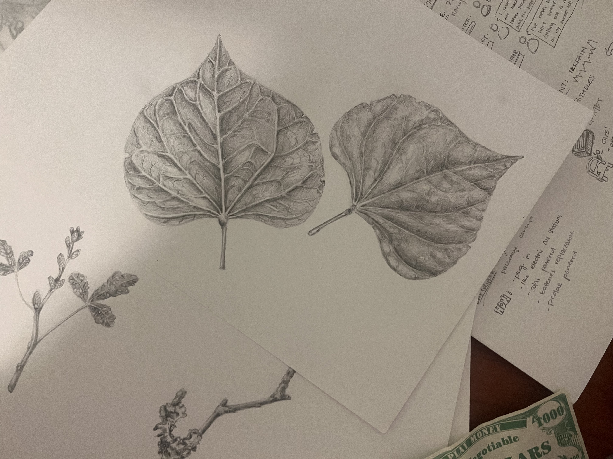

// art
Leaf Studies
Two exercises in close-looking — one anchored by the real specimen in the frame, one spread across a table as a set of structural drawings. Both are about the same thing: paying enough attention to understand.

